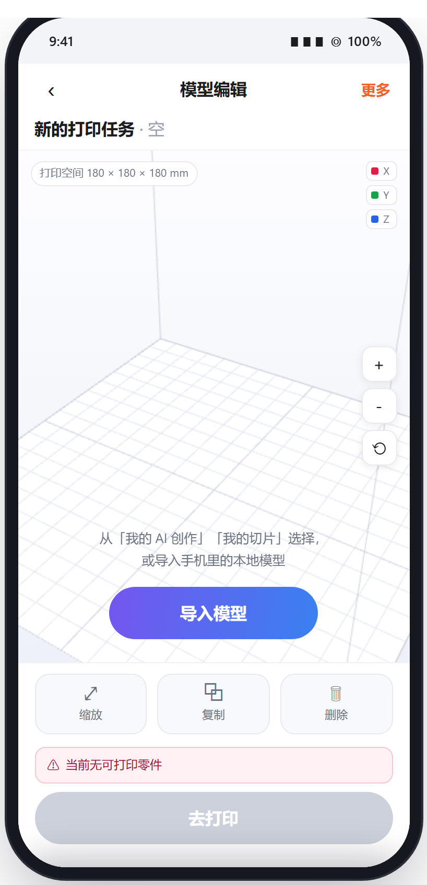

1
入口链路
从创意空间进入空态编辑页，导入选择弹窗自动升起；三种来源殊途同归
创意空间
流程起点
顶部左侧「导入模型」为跳转热区
顶部左侧「导入模型」为跳转热区
导入模型

模型编辑页 · 空态
3D 展示区保留但无零件
「去打印」置灰并显示原因
「去打印」置灰并显示原因
自动升起

导入选择弹窗
我的 AI 创作 / 我的切片
底部「导入本地模型」固定
底部「导入本地模型」固定
导航规则
返回 = 按入口分支回退
从创意空间进入（空态与导入完成后均为）→ 回创意空间；从模型详情页「打印设置」进入 → 回模型详情页。返回不做退出确认，编辑结果默认保留
空态保留 3D 展示区
打印空间示意框（180×180×180）与平台网格照常渲染、可拖动旋转，仅无任何零件；空态提示沉底展示，不占据页面中央
导入 = 追加新盘（顶部左侧「添加」可随时再次导入）
编辑页已有零件时再次导入 → 追加为新的打印盘，不覆盖、不重置现有任务；每盘以来源文件名独立命名（如「电击小子 1盘 · 恐龙小夜灯 2盘」）